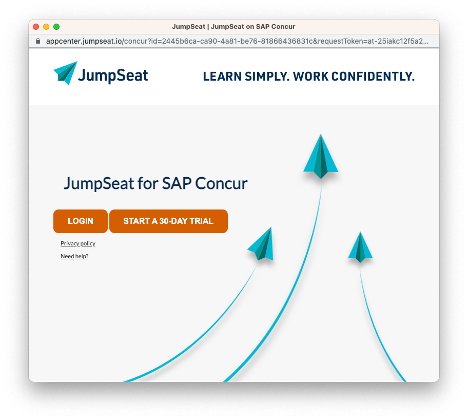

User Experience Guidelines for Enterprise Applications
In this guide, we will help you implement the connection process between an a company’s SAP Concur instance to your system. You will find best practices for user-centered design, examples of dos-and-don’ts, and suggested steps to guide the administrator through the connection process.
It is not our intention to tell you what colors and fonts to use. Maintaining your brand integrity is important, and these guidelines do not interfere with that. Rather, our goal is for SAP Concur administrator to have a pleasant and consistent experience across all of our partner applications. Observing these guidelines will help ensure that our shared users have positive experiences with both of our companies as a result of our partnership.
A word on accessibility
This guide also includes some suggestions on how to ensure your site is Section 508 compliant. At SAP Concur, we work hard to make sure our critical services are available and usable by every employee at the companies who use our products. From private companies to government agencies, we have a wide range of users with varying levels of abilities. Observing accessibility best practices in your product helps us meet our commitment to provide quality software to our entire user base.
Account linking example
This section provides guidelines for the process for an administrator to connect their company’s SAP Concur instance your application. A “user” (described generically within this document) for Enterprise applications is the company administrator (for more information on permissions required to activate an Enterprise application, please refer to the activation guide). Note that not all steps below will apply to all applications. This guide, however, attempts to cover the common variations.
The connection flow begins from the SAP Concur App Center. Once the user has accepted the terms of the connection, the user will be redirected to your site.
Step 1 Connect

Step 2 Accept Terms

Step 3 Landing Page

Step 4 Account Creation

Step 5 Confirmation

Design guidelines
The following guidelines should be used to develop your connection user experience and will be used to evaluate your application during the certification process.
Connect
There are two possible configurations for enterprise listings that modify the primary action for the user.
Activate + Connect
In this configuration Connect is the prominent call to action. This should be used in cases where the user can self-service and connect their SAP Concur account to your application automatically.

Request Information
In this configuration “Request information” is more prominent. This should be used in cases where the customer must contact the partner before connecting. This may be the case for applications which have multiple options, versions and/or varying pricing.

Accept Terms
The Terms & Conditions for your application will differ between Enterprise and Consumer applications. Enterprise applications require an additional, company-wide authorization.
For more information on the terms & conditions, please refer to the documentation on the Developer Portal.
Landing Page
This will be the first page the user sees upon redirect from SAP Concur. The SAP Concur App Center will open a new window to your pre-defined redirect URI (referred to as your “Connect URI”).
This page should include your brand and the application the customer is connecting to. In addition, the page should clearly indicate that the customer is activating an integration with SAP Concur solutions.
On this page, you must use one of the below calls to action:
| Call To Action | Description |
|---|---|
| Verification | This is used when the customer must first have signed an agreement with you prior to connecting. This is typically used for subscription services. The customer must be provided a verification code prior to connecting. |
| Sign In or Sign Up | This is used when the customer may not have an account or relationship with you prior to connecting. This is typically used for free services and services that support online account creation. |
Verification
This is the recommended option for Enterprise applications that already have a signed Agreement in place between the Partner and the customer. Once the contract has been signed by the customer, you will provide the customer with a verification code to enter on your landing page. In the remainder of this guide, this will be referred to as a “Verification” app. This page should clearly articulate the next steps and should provide the user the option to:
- Enter the verification code OR
- Contact Us

IMPORTANT: Any administrator can connect to your application from the SAP Concur App Center. It is possible that administrators that have not completed the pre-requisites will access your landing page. The “Contact Us” option will allow users that have not yet completed pre-requisites but are interested in connecting to your application to contact you. Requests generated from this landing page must be continuously monitored. You may use the inquiry link used in your listing (for more information on the inquiry link please refer to the App Center Listing Form submission document).
Sign In or Sign Up
Use this option if you support online account registration or free trials.
Note: If you support Free Trials, your Landing Page is required to indicate how long the Trial will last and what the Partner will do with the data collected if the customer declines to move forward as a customer with the Partner. This text is in addition to the other requirements such as checkboxes for the user to select for your Privacy Policy and Terms and Conditions.
Options
The first page should give the user the option to sign in with an existing account or sign up for a new account.
This page should:
- Clearly indicate the integration with SAP Concur solutions in text
- Include links to your terms and conditions and privacy policy
- In all cases, links to your “support” and “help” should be provided.
For applications that support both Enterprise and Consumers, an administrator may have an existing, personal account; In that case, it is recommended that this page guide the user to create a new, separate business account for the purpose of administering their company’s integration.
Account Creation
For most Enterprise Applications, administrators will set up a new account specifically for the SAP Concur and company integration.
To facilitate ease of use and encourage users to complete registration, it is recommended that this page only include necessary information to create the account.
Account details can be pre-populated in this form leveraging SAP Concur API’s. For more information, please refer to documentation on the Developer Portal. Once the user submits the form, your application will begin the authentication process. Your Partner Enablement representative will provide the technical details for implementation based on your SAP Concur integration type.
If your account creation process requires multiple steps, provide a progress indicator so the user knows what is required. If the form requires information the user may not have, allow the user to come back and complete the form at a later time and proceed with account creation.

Confirmation
Once the connection is complete, indicate that the connection was successful.
IMPORTANT:
For apps with online account creation, or “Sign in or Sign up”, users should be directed to close the window as the connection is complete.
Additionally, you may decide to display links for the user to your app’s home page.
Note: If you provide links to your home page, it is recommended that links open a new browser window to clearly indicate that the connection was successfully completed and to display your page in a larger form factor.
For “Verification” apps, this should provide the user information on what will occur next such as to expect an email to book their first service, follow-up on their free trial and/or what to expect from their Concur integration.

Guideline Checklist
This section provides a summarized checklist of the required and recommended components of your account linking flow. For more detail, please refer to Design Guidelines section above.
“Must” indicates required. Recommendations are provided for an optimal user experience.
Landing Page(s)
- All pages
- Must support a form factor of 800x600 (required)
- Must provide back/forward navigation, where applicable. (required)
- Should be Section 508 compliant (strongly recommended)
- Should include support and help options clearly throughout the process.
- Must support major browsers and versions. The full list of SAP Concur-supported browsers is available here. (required)
- Should adhere to your company’s brand and marketing guidelines
- Must include your company branding and specific application brand, if applicable (required)
- On the first page (at a minimum),
- Must clearly indicate this is an integration with SAP Concur solutions (required)
- Must include links to your terms and conditions and privacy policy (required)
- Verification apps, should provide a link to the inquiry form (strongly recommended)
- The Partner application should not exchange the Request token for the Access token until the User has completed all of the actions on your Landing Page.
Account Creation
- Should include a progress indicator (recommended)
Confirmation Page
- Must have an indication that the connection was successful. (required)
- Must provide next steps. (required)
Disconnect
- Users should be provided with a method to disconnect within your portal. Please see documentation for revoking a token on the Developer Portal. (strongly recommended)
Accessibility best practices
Provide text alternatives
Providing text alternatives for non-text content ensures that individuals with visual impairment are still able to understand your site or application. SAP Concur recommends providing short text alternatives for images, which makes your image content nearly as accessible as your text-based content. This allows special technology such as screen readers (which assist the blind) to read your content aloud to a user with visual disabilities.
Distinguishable content
SAP Concur’s design focuses on making it easy for users to see and/or hear content. SAP Concur manages this challenge by:
- Clearly separating foreground from background.
- Making sure color is not used as the only visual means of conveying information, indicating an action, prompting a response or distinguishing a visual element.
- Using readable fonts, making sure any text is at least 14 points and has good contrast (a minimum of 4.5 to 1 color contrast between the text and background color is recommended).
- Providing a highly visible highlighting mechanism for links or controls when they receive keyboard focus.
These design elements help make the user experience better for all users, but especially those who are visually impaired or color-blind.
Keyboard control
All functionality of your site or application should be operable through a keyboard interface without requiring specific timings for individual keystrokes. Providing keyboard input mechanisms helps users with visual impairments or mobility issues to use your site without having to point-and-click on objects they cannot see. The keyboard interface can be combined with mouse input or other input methods, to support all users.
Predictable structure
SAP Concur’s design attempts to make all pages appear and operate in predictable ways. SAP Concur manages this challenge by:
- Positioning labels clearly and in close proximity to inputs
- Using consistent navigation patterns across a set of webpages
Input assistance
SAP Concur aims to help users avoid and correct mistakes by:
- Hiding optional form fields
- Validating form submissions on the server
- Re-displaying a form with a summary of errors, if necessary
- Providing error notifications as the user enters information, including error notification information in the page title
- Highlighting or visually emphasizing errors where they occur
For further information on accessibility for you and your team, we recommend: